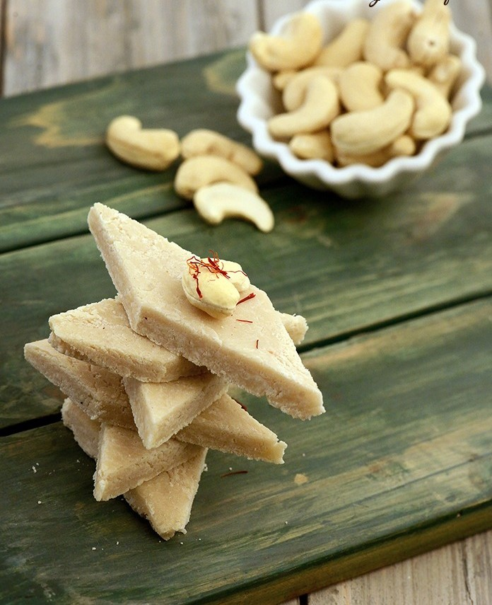

Gulab Jamun
Ingredients
- Sugar
- Bread
- Oil
Recipe
- Mix bread with a little water to form a dough.
- Shape the dough into small balls.
- Fry the balls in oil until golden brown.
- Soak the fried balls in sugar syrup.

Kaju Barfi
Ingredients
- 1 cup cashew nuts (kaju)
- 1/2 cup sugar
- 1/4 cup water
Recipe
- Grind nuts to powder.
- Add sugar and water, heat until sugar dissolves.
- Cook the mixture on low heat and stirring.
- When it thickens grease it with ghee.
- Spread it evenly using spatula on a plate.
- Let it cool, then cut in diamond-shaped pieces.
